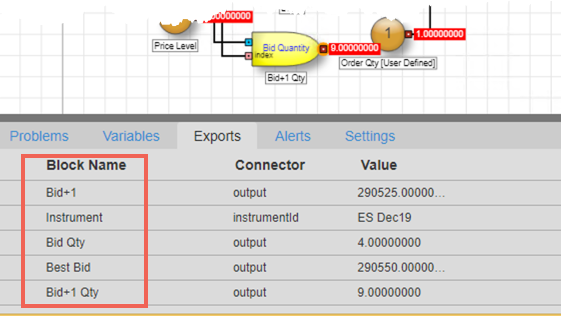
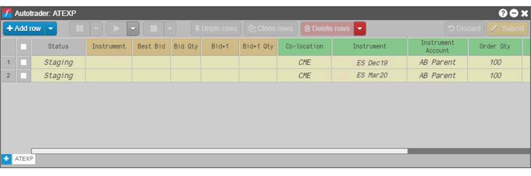
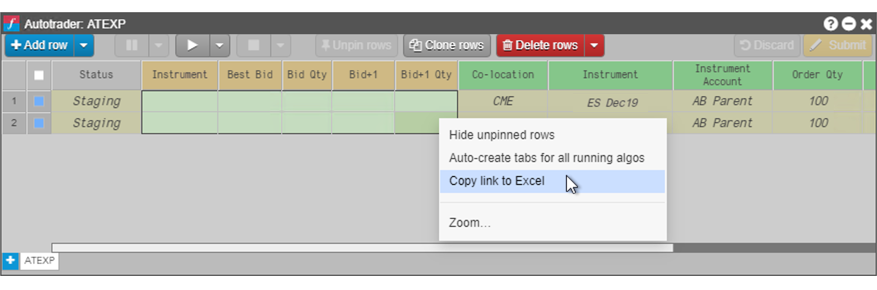
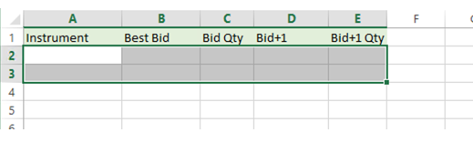
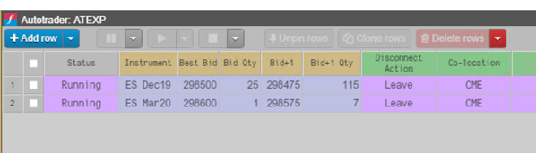
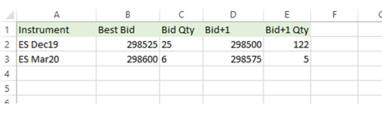

TT lets you easily share data between the Autotrader widget and your Excel spreadsheet. You can:
Linking to user variables in Autotrader
Autotrader allows you to link Excel spreadsheets into any editable, numeric cell corresponding to algo user variables. In this manner, you can seed Autotrader with values from your own Excel spreadsheets.
Tip: If you paste links from Excel and save the workspace, the links will be preserved and then restored when you re-open the workspace.
To link Excel data to algo user variables in Autotrader:
-
In Excel, select the desired range of cells; then right-click in the cell range and select Copy link to TT.

-
In the Autotrader widget, select the desired algo and click New to add the desired number of instances.
-
Select the user-defined variables to link. Ensure that the selected range matches the range of cells you selected in Excel.

-
Right-click in the range, and select Paste Link From Excel from the context menu.

The values update to match those linked from Excel.

-
To verify the values linked correctly, change the values for the linked cells in the spreadsheet. In this case, the quantities were all incremented by 10. The changes are immediately reflected in Autotrader.

Exporting Autotrader cell values to Excel
Autotrader lets you export values from an algo to Excel, which allows your spreadsheet to monitor algo block outputs. This feature requires your ADL algo to export ADL block outputs.
To export Autotrader cell values to Excel:
-
Verify that the ADL algo you are launching in Autotrader has exported the desired block outputs.

You can reference the values for any of the exported Block Name outputs.
-
In Autotrader, launch the algo and add the desired number of rows; then configure the user-defined variables for each of the algo instances as desired.

-
Select the cells you want to export; then select Copy link to Excel from the context menu.

-
In the Excel spreadsheet, select the cells and paste the contents into the selected cells.

Note: If the algos are not currently running, the cells in Excel will display Initializing as it waits for data from Autotrader.
-
In Autotrader, start the algo instances to populate the cells.

The values from the Autotrader cells dynamically update in the spreadsheet.

Removing the Excel links
To remove Excel links from a widget:
-
In the widget field linked to Excel, right-click to display the context menu.
-
Select Unlink from Excel.
To remove exported links from your spreadsheet:
-
In the Excel spreadsheet, select the cell or cells you want to clear.
-
From the right-click context menu, select Clear Contents.